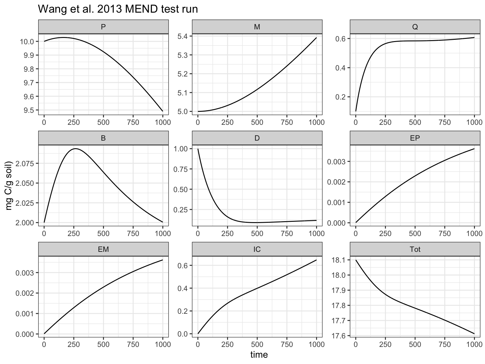
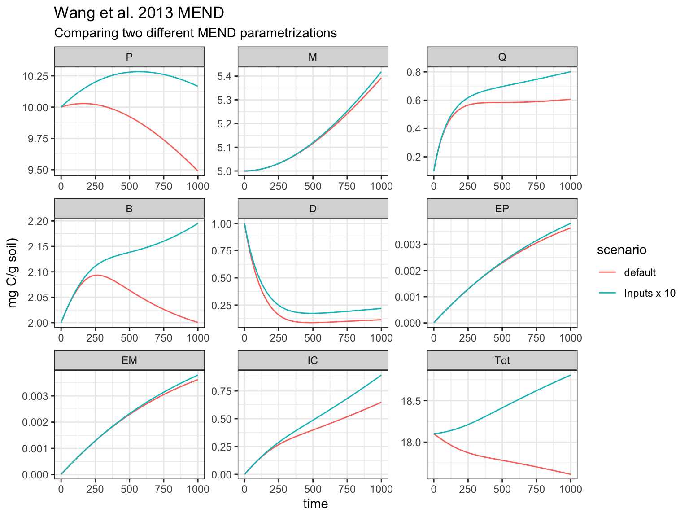

Set_Up_and_Solve_Default_MEND.RmdLoad required packages
library(MENDplus) library(ggplot2) # For plotting library(data.table) # For manipulating data frame library(deSolve) # ODE solver
# Define the inital C pools sizes. state <- c(P = 10, M = 5, Q = 0.1, B = 2, D = 1, EP = 0.00001, EM = 0.00001, IC = 0, Tot = 18.10002) # Specify the time steps. times <- seq(0, 1000, 1) # Use the table of default parameters values. params <- default_parameters # Set up the ODE solver to solve MEND governed with MEND's default flux. output <- ode(y = state, # A vector of the initial size of the C pools times = times, # A vector of the time steps to solve parms = default_parameters, # A data.table of parameters (saved as package data) func = MEND_carbon_pools, # This is the function we want the ODE to solve, the MEND carbon pools flux_function = MEND_fluxes) # Define the flux functions to use, for now stick with the fluxes from the 2013 paper. # Format the output into a long data frame to make is easier to plot. results1 <- melt(as.data.table(output), measure.vars = names(state), variable.name = "C_pool", value.name = 'value') results1 <- results1[ , scenario := "default"] ggplot(data = results1) + geom_line(aes(time, value)) + theme_bw() + facet_wrap("C_pool", scales = 'free') + labs(y = 'mg C/g soil)', title = 'Wang et al. 2013 MEND test run')

Set up MEND again but increase the inputs by 10 fold.
parms <- default_parameters parms[parameter == 'I.d', ]$value <- parms[parameter == 'I.d', ]$value * 10 parms[parameter == 'I.p', ]$value <- parms[parameter == 'I.p', ]$value* 10 # Set up the ODE solver to solve MEND. output2 <- ode(y = state, # A vector of the initial size of the C pools times = times, # A vector of the time steps to solve parms = parms, # A data.table of parameters (saved as package data) func = MEND_carbon_pools, # This is the function we want the ODE to solve, the MEND carbon pools flux_function = MEND_fluxes) # Use Wang et al 2013 flux functions # Format the output into a long data frame to make is easier to plot. results2 <- melt(as.data.table(output2), measure.vars = names(state), variable.name = "C_pool", value.name = 'value') results2 <- results2[ , scenario := "Inputs x 10"]
ggplot(data = rbind(results1, results2)) + geom_line(aes(time, value, color = scenario)) + theme_bw() + facet_wrap("C_pool", scales = 'free') + labs(y = 'mg C/g soil)', title = 'Wang et al. 2013 MEND', subtitle = 'Comparing two different MEND parametrizations')
